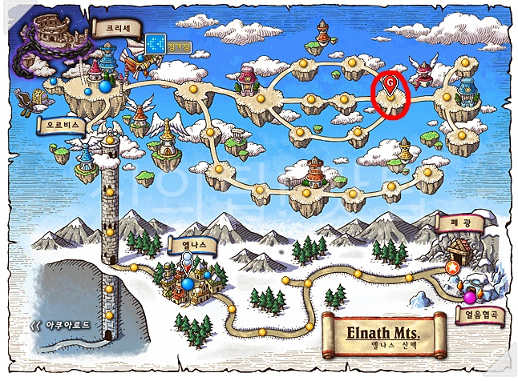
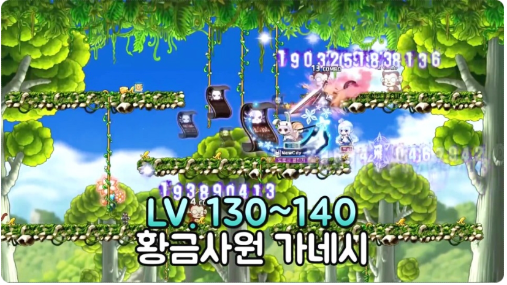

- Lv 10 - 30
골렘사원 : 골렘의 사원3
북쪽숲 : 초록나무줄기 - 테마던전을 하기 전에 꾸역꾸역 30렙까지 찍어야됩니다.
골렘을 잡다가 너무 안오른다 싶으면 초록나무줄기 가셔서 커즈아이를 잡으셔도 됩니다. - Lv 30 - 60
테마던전 - 30렙을 찍고 2차 전직을 수행한 후에 30 ~ 60렙까지는 무조건 테마던전이 좋습니다
테마던전에는 골드비치, 리엔, 요정의 숲, 엘로딘이 있습니다.
퀘스트마다 돈과 경험치를 많이 주기 때문에 무자본에게는 도움이 많이 됩니다. - Lv 60 - 70
조용한 습지 - 이곳은 인기가 정말 많은곳이라 자리가 없을수도 있습니다.
자리가 정 없으면 옆 사냥터인 축축한 습지로 가셔서 사냥해도 좋습니다.
그리고 무자본인 만큼 슬리피우드 길라잡이 퀘스트를 깨셔서 길라잡이로 이동할수 있어야됩니다.
여섯갈래길에서 디멘션 게이트라는 것으로 이동이 더욱 편해집니다. - Lv 70 - 75
스카이로드 : 하늘계단1

- 이곳도 인기가 엄청 많은곳입니다.
지형은 은근히 불편하지만 몬스터 젠도 빠르고 경험치도 잘 줍니다.
만약 이동하기가 귀찮다 싶으면 조용한 습지에서 계속 사냥하셔도 됩니다. - Lv 75 - 85
선셋로드 : 사헬지대 2 - 일자맵과 쏠쏠한 경험치 빠른 몬스터 젠으로 아주 좋은 사냥터입니다.
- Lv 85 - 100
관계자외 출입금지 - 몬스터들도 많고 2층구간도 낮아서 사냥이 아주 편합니다.
- Lv 100 - 105
미나르숲 : 리프레 서쪽 숲 - 간단한 맵 구성과 몬스터 잰이 아주 빠른곳입니다.
스타포스 맵 가지전에 여기서 렙업을 조금 하고 가는게 좋습니다. - Lv 105 - 120
미나르숲 : 하늘둥지2 - 여기서부터 스타포스 사냥터입니다.
스타포스 사냥터부터는 폭업이 가능합니다. - Lv 120 - 125
늑대의 영역3 - 계속 스타포스 사냥터가 좋긴하지만 무과금이라면 스타포스를 채우는게 매우 힘듭니다.
여기서 125까지 찍어줍니다. - 125 - 130
아랫마을 현상금 - 아랫마을 현상금 퀘스트를 하시면 경험치를 매우 많이 주기 때문에 무자본 유저에게는 필수같은 곳입니다.
- Lv 130 - 140
황금사원 가네시<4>

- 테마던전인 황금사원 가네시에서 퀘스트를 깨면서 사냥을 하시면 됩니다.
퀘스트를 깨면 4차 전직 스킬에 도움되는 마스터리북을 획득하실 수 있습니다. - Lv 140 - 145
신전 길뚫 - 보스 핑크빈을 잡기 위한 선행 퀘스트로 신전 길뚫기 퀘스트를 하셔야됩니다.
퀘스트를 깨면서 몬스터를 잡는데 경험치가 나름 짭짤합니다. - Lv145 - 160
커닝타워 : 2층카페<3> - 커닝타워에서는 2층카페가 제일 젠이 잘되고 몹도 많다고 생각이 듭니다.
버닝이 높은곳에서 사냥해주시면 됩니다. - Lv 160 - 165
미래의 문 퀘스트 - 시간의 신전을 통해 갈 수있는 해당 지역의 퀘스트를 깨주시면 됩니다.
이 퀘스트는 보스 시그너스를 잡는데 필요한 선행퀘스트 이므로 깨주는게 좋습니다. - Lv 165 - 170
지구방위 본부 퀘스트 - 지구방위 본부 퀘스트를 수행한 후 버닝이 높은 사냥터에서 사냥하시면 됩니다.
- Lv 170 - 190
크리티아스 길뚫, 탐정 레이븐, 여우 골짜기 - 170 ~ 190레벨은 크리티아스 길뚫기 퀘스트를 진행하고 버닝사냥터를 찾아 사냥을 진행하시면 됩니다.
퀘스트를 진행하면 상점에서 반마력석을 통해 EXP엔트로피라고 경험치를 1.5배 증가시켜주는 아이템을 교환한 수 있습니다.
175레벨이 되면 테마던전 레이븐을 돌고, 185레벨이 되면 테마던전 여우골짜기를 도시면 됩니다. - Lv 190 - 200
황혼의 페리온 : 버려진 발굴지역 2, 4 - 발굴지역을 갔는데 딜이 안나온다 싶으면 스텀프를 잡으러 가시면 됩니다.
그러다가 렙이 좀 오르고 딜이 나온다 싶으면 다시 발굴지역으로 가서 사냥해주시면 됩니다.
무자본 사냥터
준비물


얻을수 있는 각종 경험치쿠폰과 인내심을 챙기시면 됩니다.
확실히 무자본은 고자본보다 렙업이 느립니다. 인내심을 가지세요